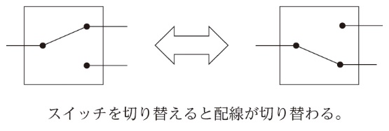
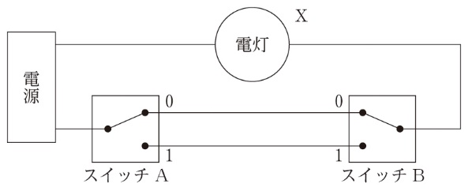
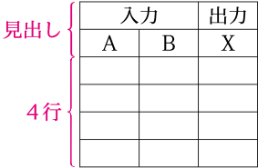
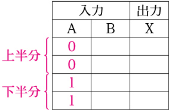
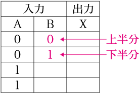
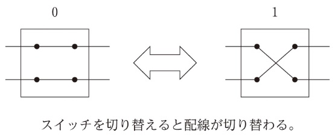
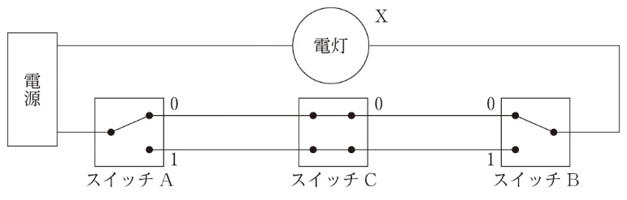

Section 1 — Visual Digest
ひと目でわかる おさらい
一つの電灯を2か所のスイッチで点けたり消したりする3路スイッチの配線を題材に、0と1のすべての組合せを重複や漏れなく並べて真理値表を作る手順を、共通テスト型の思考問題で確かめる。そのうえで、同じ結果になる論理回路を入力の組合せごとに絞り込み、4路スイッチを加えた3入力の真理値表まで作る。
入力の0と1に対して出力が決まる回路。基本は論理積回路・論理和回路・否定回路の三つ。
| A | B | X |
|---|---|---|
| 0 | 0 | 0 |
| 0 | 1 | 0 |
| 1 | 0 | 0 |
| 1 | 1 | 1 |
| A | B | X |
|---|---|---|
| 0 | 0 | 0 |
| 0 | 1 | 1 |
| 1 | 0 | 1 |
| 1 | 1 | 1 |
| A | X |
|---|---|
| 0 | 1 |
| 1 | 0 |
すべての入力の組合せと、対応する出力の関係を示す表。
AND は D の形、OR は丸みがある。出力側の ○ は否定を表す。
一つの電灯を2か所のスイッチで点灯または消灯できるようにするため、図1のような「3路スイッチ」が使用される。例えば、階段下の1階のスイッチで電灯を点灯し、上にあがって2階のスイッチで電灯を消灯する場合や、廊下の一端のスイッチで電灯を点灯し、廊下を歩いていき、もう一方の端のスイッチで電灯を消灯する場合がこれにあたる。

この回路の配線は、図2のようになっている。3路スイッチはAとBの二つあり、上側に切り替わったときは0、下側に切り替わったときは1とし、電灯Xが点灯したときは1、消灯したときは0とする。

このとき、入力をA・B、出力をXとして、図2の回路の真理値表を作成せよ。
次のようにすると、0と1のすべての組合せを重複や漏れがなく作成できる。
Step 1…論理回路の入力と出力の数に応じて、真理値表の一番上に見出しを作る
さらに、入力の数に応じて、行数を設定した表枠を作る
入力の数は、AとBの2なので、表の行数は 2A ＝Bとなる。
Step 2…入力の枠に0と1のすべての組合せを書く
① 一つ目の入力（A）について
行のCに0を、Dに1を書く。
② 次の入力（B）について
①で0を書いた行のCに0を、Dに1を書く。
①で1を書いた行のCに0を、Dに1を書く。
Step 3…入力に応じた出力を一つずつ考えて記入する
「入力A（スイッチA）が0、入力B（スイッチB）が0のとき、出力X（電灯）は1（点灯）」
2
入力はAとBの二つなので、2の2乗の「2」が入る。
4
22 = 4。入力が二つなら組合せは4通りなので、表は4行になる。
上半分
一つ目の入力Aは、4行のうち上半分の2行に0を書く。
下半分
下半分の2行に1を書く。次の入力Bも、Aが0の2行とAが1の2行のそれぞれで、上半分に0、下半分に1を書く。
1・0・0・1
AとBが同じ側(00、11)に切り替わっていると、上の配線か下の配線のどちらかで電源と電灯がつながり、点灯する。違う側(01、10)では、配線がスイッチBのところで切れて消灯する。



| A | B | X |
|---|---|---|
| 0 | 0 | 1 |
| 0 | 1 | 0 |
| 1 | 0 | 0 |
| 1 | 1 | 1 |
前ページの図2の回路と同じ結果が得られる論理回路を、次の⓪～③のうちから一つ選べ。
図2の真理値表は、AとBが00のとき1、01のとき0、10のとき0、11のとき1となる。
まず、入力Aが0、入力Bが0の場合について、⓪～③の論理回路に当てはめていく。論理回路⓪は、入力Aが0、入力Bが0の場合、出力Xは1となる。同様に、論理回路①は0となり、論理回路②は1、論理回路③は1となる。よって、出力Xが0となった論理回路①は候補から外れる。
次に、入力Aが0、入力Bが1の場合について、⓪、②、③の論理回路に当てはめていく。論理回路⓪は、入力Aが0、入力Bが1の場合、出力Xは0となる。同様に、論理回路②は0、論理回路③は1となる。よって、出力Xが1となった論理回路③は候補から外れる。
次に、入力Aが1、入力Bが0の場合について、⓪、②の論理回路に当てはめていく。論理回路⓪は、入力Aが1、入力Bが0の場合、出力Xは1となる。同様に、論理回路②は0となる。よって、論理回路⓪は候補から外れ、残った論理回路②が該当する答えになる。
なお、念のため入力Aが1、入力Bが1の場合の出力Xを確認すると、論理回路②の出力は1となり、真理値表と同じ結果が得られていることがわかる。
| A | B | 図2のX | ⓪ | ① | ② | ③ |
|---|---|---|---|---|---|---|
| 0 | 0 | 1 | 1 | 0 | 1 | 1 |
| 0 | 1 | 0 | 0 | 1 | 0 | 1 |
| 1 | 0 | 0 | 1 | 1 | 0 | 1 |
| 1 | 1 | 1 | 1 | 0 | 1 | 0 |
②は、OR回路の出力と、AND回路の出力をNOT回路で反転したものをAND回路に入れている。ここまでで「一方のみ1のときだけ1」(0・1・1・0)になり、最後のNOT回路で反転して1・0・0・1、つまり「AとBが同じとき1」になる。1行ずつ当てはめて候補を外していくと、4つの回路の真理値表をすべて作らなくても答えが決まる。
スイッチを一つ増やして、3か所のスイッチで点灯または消灯できるようにするためには、図3のような「4路スイッチ」が使用される。

この回路の配線は、図4のようになっている。3路スイッチはAとBの二つあり、上側に切り替わったときは0、下側に切り替わったときは1とし、4路スイッチはスイッチCとして設置し、図3の左の状態が0、右の状態が1とし、電灯Xが点灯したときは1、消灯したときは0とする。

このとき、入力をA、B、Cとし、出力をXとして、この図4の回路の真理値表を作成せよ。
000・001・010・011・100・101・110・111
行数は 23 = 8。Aは上半分の4行に0、下半分の4行に1。Bは、Aが同じ値の4行ずつで上半分に0、下半分に1。Cは1行ずつ0と1を交互に書く。
1・0・0・1
AとBが同じ側(B=0)の2行では、C=0なら点灯、C=1なら消灯。AとBが違う側(B=1)の2行では、C=0なら消灯、C=1なら点灯。
0・1・1・0
AとBが違う側(B=0)の2行では、C=0なら消灯、C=1なら点灯。AとBが同じ側(B=1)の2行では、C=0なら点灯、C=1なら消灯。
| A | B | C | X |
|---|---|---|---|
| 0 | 0 | 0 | 1 |
| 0 | 0 | 1 | 0 |
| 0 | 1 | 0 | 0 |
| 0 | 1 | 1 | 1 |
| 1 | 0 | 0 | 0 |
| 1 | 0 | 1 | 1 |
| 1 | 1 | 0 | 1 |
| 1 | 1 | 1 | 0 |
このスイッチの図を見ると、入力AとBの図での配線の上下が揃っている（例えば00、11）ときは、入力Cが0（図での配線が平行）であれば、電灯は点灯する（出力Xが1）ことがわかる。
逆に、入力AとBの図での配線の上下が揃っていない（例えば01、10）ときは、入力Cが1（図での配線がクロス）であれば、電灯は点灯する（出力Xが1）ことがわかる。
よって、これらのことから、A：0、B：0、C：0→X：1、A：1、B：1、C：0→X：1、A：0、B：1、C：1→X：1、A：1、B：0、C：1→X：1 となり、それ以外の組合せは、電灯は点灯しない（出力Xが0）ことがわかる。
表を上から2行ずつ(A・Bはそのままで、Cだけが違う組)見ると、Xは1と0、0と1、0と1、1と0で、Cを切り替えるたびに点灯と消灯が入れ替わる。ほかの2つの入力をそのままにして、Aだけ、またはBだけを切り替えても、同じように入れ替わる。だから3か所のどこからでも電灯を点けたり消したりできる。